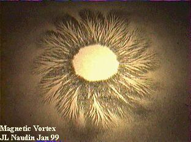
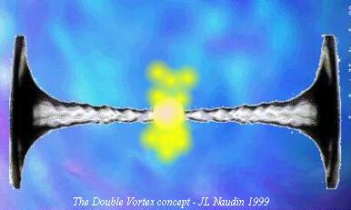
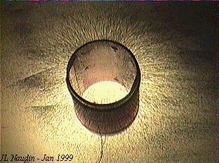
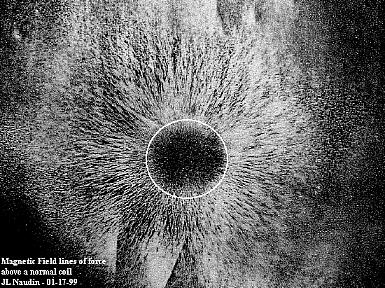
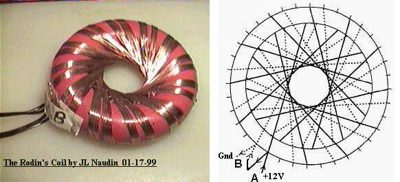
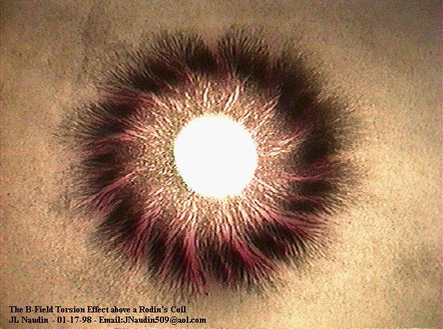
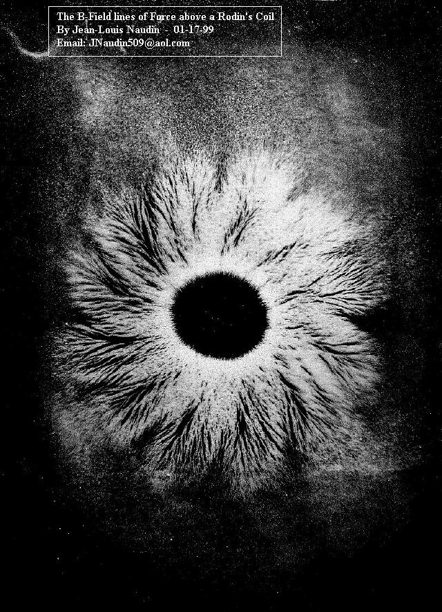
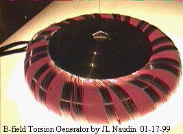

B-Field Torsion Generator
created on 01-17-99 - JLN Labs - last update on 01-17-99
The purpose in this experiment is to try to generate a sufficient torsion effect in B-Field so as to generate a magnetic vortex in the Aether itself. A vortex is an open system and it has self-sustained capabilities as long as a differential pressure exists between two layers (see the Vortex in the bottle experiment ). So, if it is possible to generate a double vortex in the Aether it seems possible to build a self-sustained open system to get Free Energy forever from the vacuum itself.

The basic principle of the double vortex generator
 The first
step is to find a good apparatus for inducing torsion in the
B-Field. An approach with a conventional coil is not sufficient
because, as you can notice below, the lines of the B-Field are
not able to produce the desired effect because the lines are only
divergent and "not twisted".
The first
step is to find a good apparatus for inducing torsion in the
B-Field. An approach with a conventional coil is not sufficient
because, as you can notice below, the lines of the B-Field are
not able to produce the desired effect because the lines are only
divergent and "not twisted".


The magnetic field
lines (in negative) at the top of a normal coil
(the section of the coil has been showed by the white circle)
In a conventional coil, field lines which are only divergent are not sufficient to initiate the spin of the magnetic energy, the only motion generated is the well known EMF effect.
So, I have used a special toroidal coil named "The Rodin's Coil". This coil has been invented by Marko Rodin and this seems a good mean for inducing a "twist" or a B-Field torsion effect in the Aether.

This special topology of coil seemed a good candidate for generating the B-Field torsion effect. So, I have decided to explore deeply this device. I have connected the two coils A and B in series and used a 12V DC power supply. The DC current was about 3A.
As you can see below the magnetic field lines picture is very interesting and tends to confirm that the B-Field torsion effect is real.


The magnetic field picture (in negative) above has been done easily with iron powder spread on a glass plate placed above the Rodin's coil. There are two interesting points to observe:
 The twisting effect of
the B-Field lines. So, during the
growing or the vanishing state of the field,
The twisting effect of
the B-Field lines. So, during the
growing or the vanishing state of the field,
the torsion of B-Field is now able to spin the Aether
itself.
 The hole in the center of
the tore with a clean and neat
circumference (contrary to a conventional coil). The
center hole can be the vortex center of the field.
The hole in the center of
the tore with a clean and neat
circumference (contrary to a conventional coil). The
center hole can be the vortex center of the field.
You may click on the picture to see a RealVideo(tm) movie of the B-Field torsion in action.
Now, I need to find some mean to increase the effect observed so as to induce the strong vortex in the medium. More tests and measurements have already been done which confirm the reality of the effect...

More to come soon...
If you have any suggestions or comments, send me your Feedback
 Email : JNaudin509@aol.com
Email : JNaudin509@aol.com
Return to the B-Field Torsion page